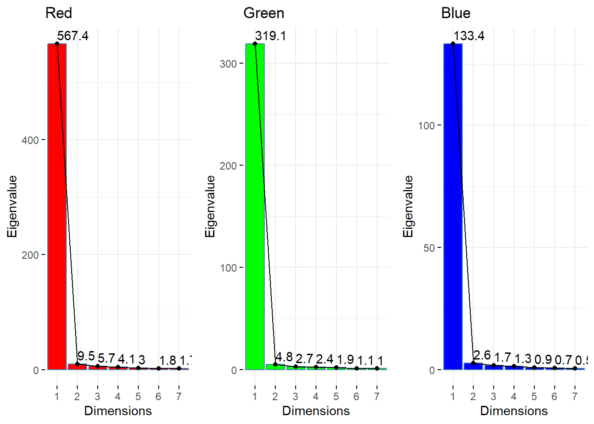
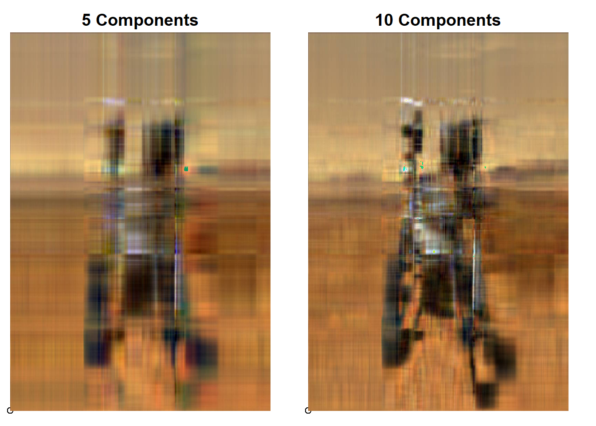
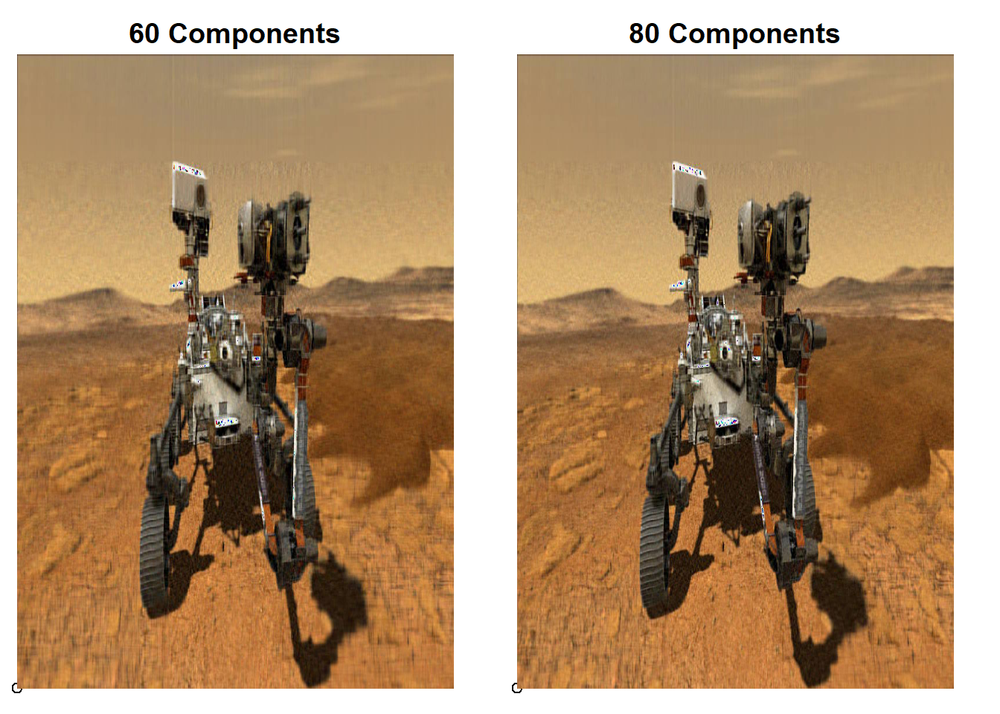
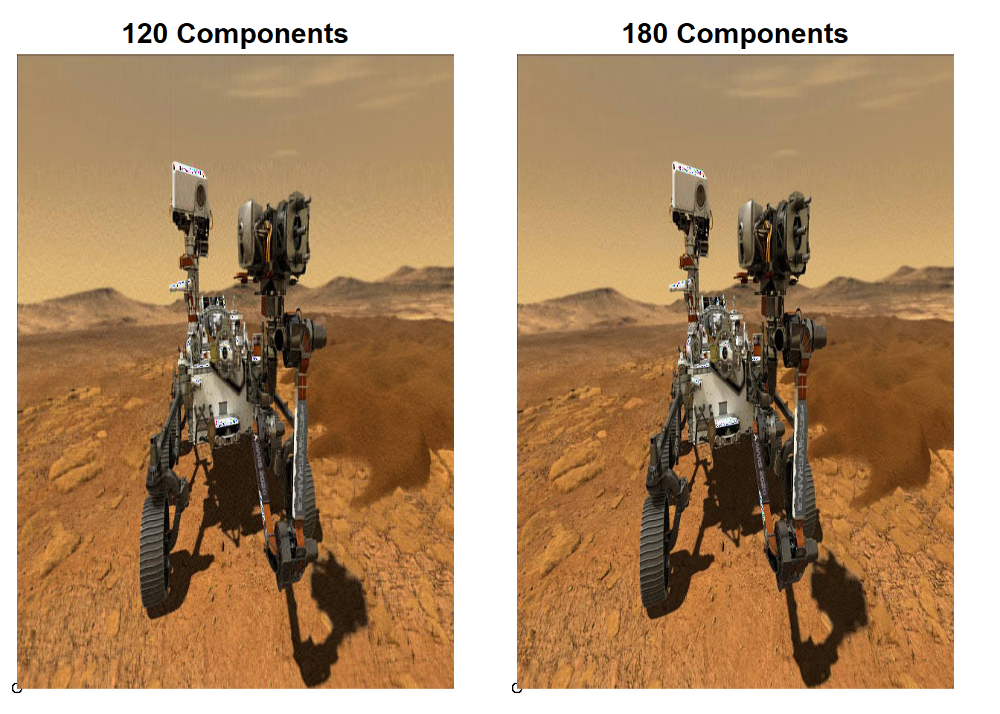
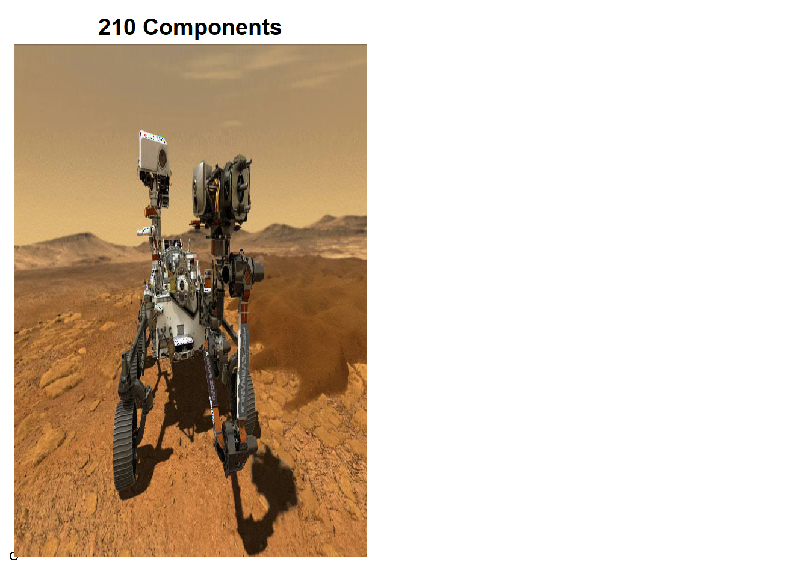

if (!require("pacman"))
install.packages("pacman")Loading required package: pacmanWarning: package 'pacman' was built under R version 4.4.1pacman::p_load(jpeg,magick,here,factoextra,gridExtra,ggplot2,
abind,knitr)Credit for this approach goes to this source: https://rpubs.com/YhawMc/uslpca2
if (!require("pacman"))
install.packages("pacman")Loading required package: pacmanWarning: package 'pacman' was built under R version 4.4.1pacman::p_load(jpeg,magick,here,factoextra,gridExtra,ggplot2,
abind,knitr)You can add options to executable code like this
rover_origin <- readJPEG(here("perserverance_mars_rover.jpeg"))
dim(rover_origin)[1] 844 1500 3red <- rover_origin[,,1]
green <- rover_origin[,,2]
blue <- rover_origin[,,3]
red.pca <- prcomp(red, center=FALSE, scale.=FALSE)
green.pca <- prcomp(green, center=FALSE, scale.=FALSE)
blue.pca <- prcomp(blue, center=FALSE, scale.=FALSE)
list.rover_origin.pca <- list(red.pca, green.pca, blue.pca)
f1 <- fviz_eig(red.pca, choice = 'eigenvalue', main = "Red", barfill = "red", ncp = 7, addlabels = TRUE)
f2 <- fviz_eig(green.pca, choice = 'eigenvalue', main = "Green", barfill = "green", ncp = 7, addlabels = TRUE)
f3 <- fviz_eig(blue.pca, choice = 'eigenvalue', main = "Blue", barfill = "blue", ncp = 7, addlabels = TRUE)
grid.arrange(f1, f2, f3, ncol=3)
for (i in c(5, 10,15,30,60,80,120,180,210)) {
new_image <- abind(red.pca$x[,1:i] %*% t(red.pca$rotation[,1:i]),
green.pca$x[,1:i] %*% t(green.pca$rotation[,1:i]),
blue.pca$x[,1:i] %*% t(blue.pca$rotation[,1:i]),
along = 3)
writeJPEG(new_image, paste0('Compressed_image_with_',i, '_components.jpg'))
}
image_plot <- function(path, plot_name) {
require('jpeg')
img <- readJPEG(path)
d <- dim(img)
plot(0,0,xlim=c(0,d[2]),ylim=c(0,d[2]),xaxt='n',yaxt='n',xlab='',ylab='',bty='n')
title(plot_name, line = -0.5)
rasterImage(img,0,0,d[2],d[2])
}
par(mfrow = c(1,2), mar = c(0,0,1,1))
for (i in c(5,10,15,30,60,80,120,180,210)) {
image_plot(paste0('Compressed_image_with_',i, '_components.jpg'),
paste0(round(i,0), ' Components'))
}




table <- matrix(0,10,3)
colnames(table) <- c("Number of components", "Image size (kilobytes)", "Saved Disk Space (kilobytes)")
table[,1] <- c(5,10,15,30,60,80,120,180,210,"Original Rover image")
table[9,2:3] <- round(c(file.info('perserverance_mars_rover.jpeg')$size/1024, 0),2)
for (i in c(1:8)) {
path <- paste0('Compressed_image_with_',table[i,1], '_components.jpg')
table[i,2] <- round(file.info(path)$size/1024,2)
table[i,3] <- round(as.numeric(table[9,2]) - as.numeric(table[i,2]),2)
}
kable(table)| Number of components | Image size (kilobytes) | Saved Disk Space (kilobytes) |
|---|---|---|
| 5 | 71.6 | 201.81 |
| 10 | 83.96 | 189.45 |
| 15 | 93.04 | 180.37 |
| 30 | 109.68 | 163.73 |
| 60 | 129.54 | 143.87 |
| 80 | 137.91 | 135.5 |
| 120 | 148.8 | 124.61 |
| 180 | 156.41 | 117 |
| 210 | 273.41 | 0 |
| Original Rover image | 0 | 0 |